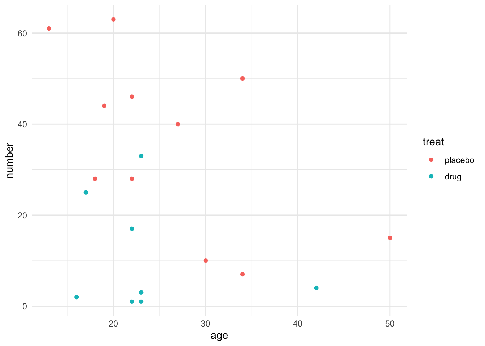

The most commonly used models for count data in clinical trials include:
Poisson regression: assumes the response variable \(Y\) has a Poisson distribution, which is linked using the logarithm with explanatory variables \(\bf{x}\).
Quasi-Poisson regression: Poisson model that allows overdispersion, i.e. dispersion parameter is not fixed at one.
Negative-Binomial regression: popular generalization which loosens the assumption that the variance is equal to the mean made by the Poisson model.
Other models include hurdle or zero-inflated models, if data have more zero observations than expected.
Example: Familial Andenomatous Polyposis Data
Data source: F. M. Giardiello, S. R. Hamilton, A. J. Krush, S. Piantadosi, L. M. Hylind, P. Celano, S. V. Booker, C. R. Robinson and G. J. A. Offerhaus (1993), Treatment of colonic and rectal adenomas with sulindac in familial adenomatous polyposis. New England Journal of Medicine, 328(18), 1313–1316.
Data from a placebo-controlled trial of a non-steroidal anti-inflammatory drug in the treatment of familial andenomatous polyposis (FAP). (see ?polyps for details).
We analyze the number of colonic polyps at 12 months in dependency of treatment and age of the patient.
polyps %>%ggplot(aes(y = number, x = age, color = treat)) +geom_point() +theme_minimal()

Model Fit
We fit a generalized linear model for number using the Poisson distribution with default log link.
# Poissonm1 <-glm(number ~ treat + age, data = polyps, family = poisson)summary(m1)
Call:
glm(formula = number ~ treat + age, family = poisson, data = polyps)
Coefficients:
Estimate Std. Error z value Pr(>|z|)
(Intercept) 4.529024 0.146872 30.84 < 2e-16 ***
treatdrug -1.359083 0.117643 -11.55 < 2e-16 ***
age -0.038830 0.005955 -6.52 7.02e-11 ***
---
Signif. codes: 0 '***' 0.001 '**' 0.01 '*' 0.05 '.' 0.1 ' ' 1
(Dispersion parameter for poisson family taken to be 1)
Null deviance: 378.66 on 19 degrees of freedom
Residual deviance: 179.54 on 17 degrees of freedom
AIC: 273.88
Number of Fisher Scoring iterations: 5
The parameter estimates are on log-scale. For better interpretation, we can exponentiate these estimates, to obtain estimates and provide \(95\)% confidence intervals:
# OR and CIexp(coef(m1))
(Intercept) treatdrug age
92.6681047 0.2568961 0.9619140
Predictions for number of colonic polyps given a new 25-year-old patient on either treatment using predict():
# new 25 year old patientnew_pt <-data.frame(treat =c("drug","placebo"), age=25)predict(m1, new_pt, type ="response")
1 2
9.017654 35.102332
Modelling Overdispersion
Poisson model assumes that mean and variance are equal, which can be a very restrictive assumption. One option to relax the assumption is adding a overdispersion constant to the relationship, i.e. \(\text{Var}(\text{response}) = \phi\cdot \mu\), which results in a quasipoisson model:
# Quasi poissonm2 <-glm(number ~ treat + age, data = polyps, family = quasipoisson)summary(m2)
Call:
glm(formula = number ~ treat + age, family = quasipoisson, data = polyps)
Coefficients:
Estimate Std. Error t value Pr(>|t|)
(Intercept) 4.52902 0.48106 9.415 3.72e-08 ***
treatdrug -1.35908 0.38533 -3.527 0.00259 **
age -0.03883 0.01951 -1.991 0.06284 .
---
Signif. codes: 0 '***' 0.001 '**' 0.01 '*' 0.05 '.' 0.1 ' ' 1
(Dispersion parameter for quasipoisson family taken to be 10.72805)
Null deviance: 378.66 on 19 degrees of freedom
Residual deviance: 179.54 on 17 degrees of freedom
AIC: NA
Number of Fisher Scoring iterations: 5
Alternatively, we can explicitly model the count data with overdispersion using the negative Binomial model. In this case, the overdispersion is a function of both \(\mu\) and \(\mu^2\):